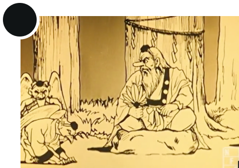
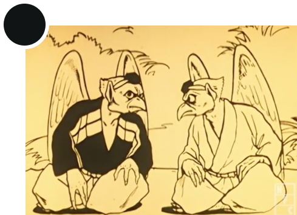
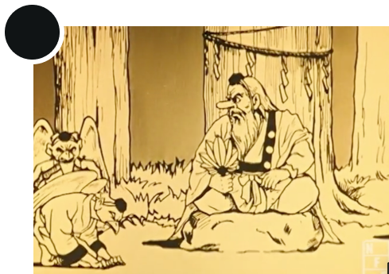
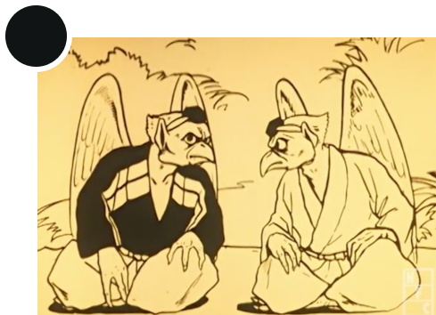
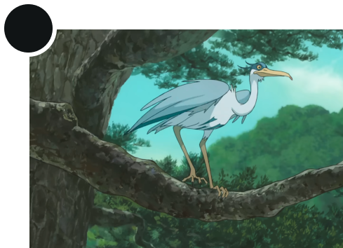
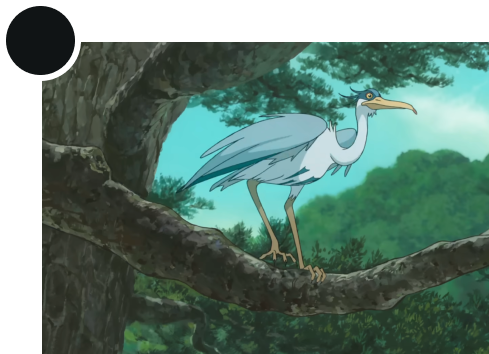

TENGU
Bird-man with a red face and long nose
Tengu (Japanese: 天狗, lit. 'Heavenly Dog') are a type of legendary creature found in Shinto belief. They are considered a type of yōkai (supernatural beings) or Shinto kami (gods or spirits). The Tengu were originally thought to take the forms of birds of prey and a monkey deity, and they were traditionally depicted with human, monkey, and avian characteristics.
Text from en.wikipedia.org/wiki/Tengu

Utagawa Kuniyoshi, Elephant and a flying tengu, 1842
 Implicit reference
Implicit reference
 Explicit reference
Explicit reference
 





 
